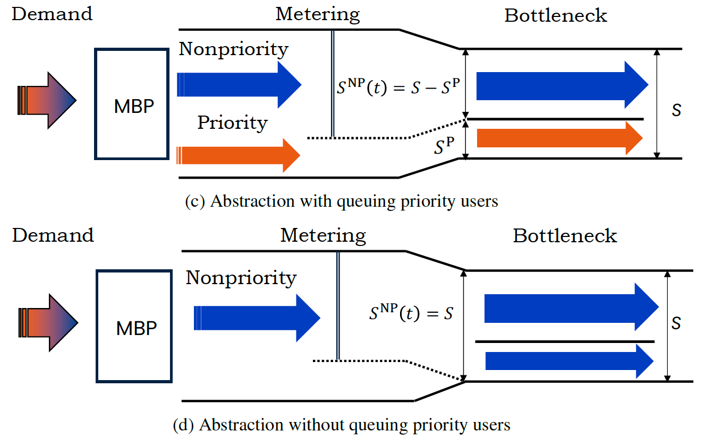

2022–2024 · EU Horizon 2020 · Grant 953783
DIT4TraM: Distributed mobility management
DIT4TraM developed distributed, passenger-oriented control strategies for multimodal urban transport systems.

Research question
Can local agents coordinate traffic and mobility services across intersections, corridors, and networks without relying on a single central controller?
Approach
The project applied swarm intelligence, deep reinforcement learning, max-pressure and perimeter control, dynamic bus-lane management, and tailored metering-based priority.
Contribution
I led work on two deliverables concerning distributed mobility management and passenger-oriented control for large-scale urban systems. The related priority-allocation study designs a dynamic rule for scarce bottleneck capacity under heterogeneous scheduling preferences.